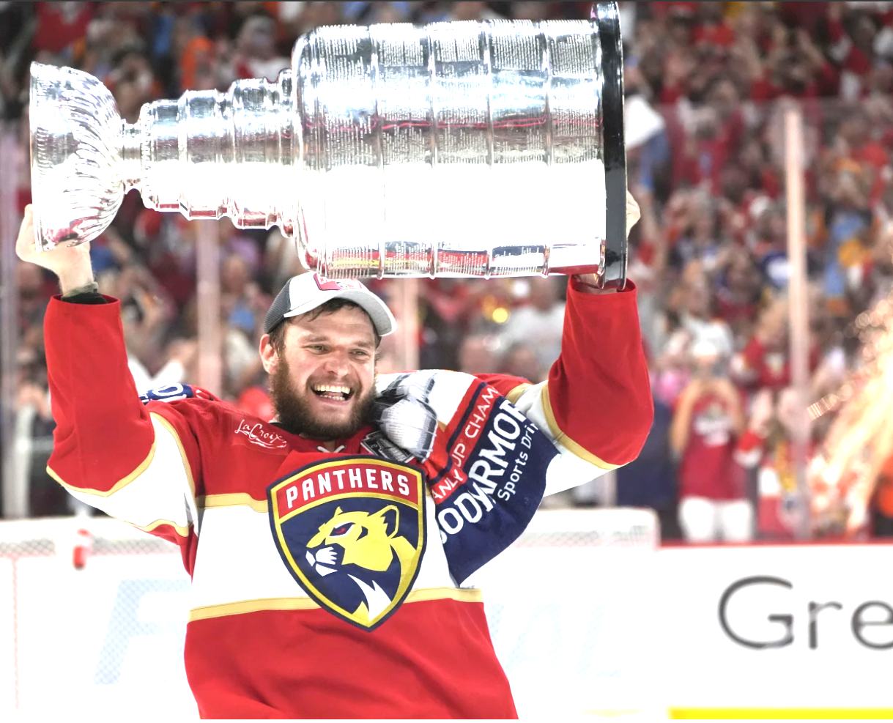

NHL Shot Analysis
Introduction
A popular sport in both North America and Europe, ice hockey is considered one of the fastest and most difficult team games to play.
In North America, the largest ice hockey league is the National Hockey League or NHL. It is a league comprised of 32 teams, 25 in the U.S. and 7 in Canada, all of whom compete each year to lift what some consider the greatest trophy in sports, the Stanley Cup.

The basic rules of hockey are as follows:
- Each team can have a maximum of 5 players plus a goaltender on the ice at any given time
- This can change based on whether a team has taken a penalty (infraction), or has pulled their goaltender for an extra attacked
- You win by scoring more goals than the other team
- A goal is when the puck, the small black object made of vulcanized rubber, crosses the goal line and into the net
- There is an exception to this rule in the regular season, you can win in a shootout, which doesn’t count as a goal

Goals and Shot Attempts
So, how does a team score a goal?
The most standard way is to take a shot from somewhere, most often in the offensive/attacking zone. When a player takes a shot, it registers as a shot attempt (SA). When a shot attempt is placed on net, it counts as a shot on goal (SoG), and when it goes into the goal, it’s counted as a goal or goal for (GF).
The first gif below shows a shot attempt that is also a shot on goal and a goal for.

The second gif shows a shot attempt that was blocked by a defender and is therefore only a shot attempt, not a shot on goal.

Project Motivation
Any fan of the NHL might have heard the term shot attempt, especially from the last few years, as broadcasting networks such as ESPN have talked about them ad nauseum as a be-all-end-all offensive statistic.
As a New York Rangers fan, I especially began to notice the term being used in reference to the Carolina Hurricanes, a team whom the Rangers have played twice in the playoffs in the past 3 years (2022 and 2024). The Hurricanes would frequently have double or triple the number of shot attempts as the Rangers, however…
However, neither the Rangers nor the Hurricanes were the primary motivation for this analysis. It’s actually the Florida Panthers, the current reigning back-to-back Stanley Cup champions.
The Florida Panthers have made the Stanley Cup Final for the past 3 years, losing the first year to Vegas, then winning the past two against Edmonton both times. After making the Final for the third consecutive season by beating the Carolina Hurricanes in the Eastern Conference Final in 5 games, Hurricanes coach Rod Brind’Amour said “[The Florida Panthers] are the standard”.
The Panthers are a team that prides itself on a two-way game, being effective in all-three zones. In the offensive zone, that includes getting shots to the net. The NHL is a copycat league, as are most in the sports world. This leads me to analyzing Shot Attempts as a metric and trying to forecast shot attempts throughout the year in a standard, 82 game regular season.
Data
To analyze this, I used MonkeyPuck.com data. Specifically, their game data which has tracked NHL games since the 2008 season.
For this project, I will only look at data from the 2021 season (which began on October 12, 2021) through the beginning of the 2025 (current) season, with the most recent data as of October 28, 2025, excluding all playoffs.
The reasons for this specific stratification are:
- This is reasonably recent data
- The 2021-22 season is when the NHL expanded to its current number of 32 teams with the addition of the
Seattle Kraken - This was the first full-length, 82 game season following the 2020-21 COVID Pandemic
- Each season has been 82 regular season games for each team
- All 32 teams played 82 games in the 4 seasons of training data (\(32 \times 82 \times 4 = 10,496\) total games)
- Each team has played a minimum of \(8\) games in the 2025 season which can be used as testing data for Time Series forecasting
- As a note, the
Arizona Coyotesmoved to Utah for the 2024 season, so theArizona Coyotes, theUtah Hockey Cluband theUtah Mammothare all counted as the same franchise for the purpose of this analysis
Raw Data
The below data has been filtered and had some renaming done for visual purposes, but is more-or-less the raw data that was pulled from MoneyPuck.
Data Preprocessing
For the temporal component of this analysis, I aggregated all of the ShotAttempts_For for each team across each game_number.
What this means is, for each team’s game 1, or game 2, 3… 82 (e.g.: \(gameNumber \in [1-82]\)), we take the average of all 32 teams in each season and count that.
So as an example, below we see the first game of each season (excluding 2025 since it’s not included in the training data) for the Los Angeles Kings:
So, across the four \(GameNumber=1\) for the Los Angeles Kings, \(\mu\approx65.2\) and \(\sigma\approx16.3\).
Doing this for every team, then averaging those values, we get the following:
There are \(128\) occurances of each game number (\(32 \times 4\)).
EDA
Before performing any Time Series modeling, I wanted to see if we could gain any other insights from the data, including its distribution.
Shot Attempt Volume

This stacked bar/proportion chart gives us an idea of the volume of shot attempts.
Top 10
Next I looked at shots on goal to shot attempts and goals for to shot attempts and ranked the top 10 in each, along with their respective win % (how many Regulation/OT Wins, not including shootout wins).

It’s interesting that shots on goal / shot attempts tends to favor teams with some of the worse win percentages, while goals for / shot attempts seems to favor the better teams, and other than the Buffalo Sabres, the teams that are top 10 in both metrics tend to be some of the better teams in the league.
Shot Attempt Distribution
The below histogram and tests show the distribution of shot attmepts over a :

The distribution looks to be fairly normal.
Running a few tests we can ensure the data is normally distributed, as well as look at its skew.
Shapiro-Wilk normality test
data: df_team_totals$ShotAttemptsFor
W = 0.97291, p-value = 0.5832[1] 0.2875302[1] -0.1121519Goodness-of-fit statistics
1-mle-norm 2-mle-gamma 3-mle-lnorm
Kolmogorov-Smirnov statistic 0.11073958 0.11608965 0.11944849
Cramer-von Mises statistic 0.06265581 0.06109229 0.06102607
Anderson-Darling statistic 0.38101859 0.36336270 0.35935704
Goodness-of-fit criteria
1-mle-norm 2-mle-gamma 3-mle-lnorm
Akaike's Information Criterion 551.3926 551.0638 550.9657
Bayesian Information Criterion 554.3241 553.9953 553.8972
The Shapiro-Wilkes Test returned a \(p-value \approx 0.58\), so we can conclude the \(H_0\) of its test that the data is normally distributed.
The skewness test returned \(0.29\) showing a slightly-positive (right-tailed) skew, but nothing completely out of the ordinary, while the kurtosis test returned \(-0.11\), slightly lower than a normal distribution at \(0\), but practically normal.
The Kolmogorov-Smirnov statistic shows that the normal distribution’s \(CDF\) fits the data best. Both the CvM and Anderson-Darling statistics show the other distributions might be marginally better, but since the difference is marginal, a normal distribution likely still fits the data best and at the very least most simply.
The AIC and BIC figures while technically favoring the other types of distributions, really don’t show a significant statistical difference between the three.
Finally, the diagnostic plots also confirm normally distributed data. Although we see some slight skew, these all confirm the data is fairly normally distributed.
We can also expect that as more game data is added, this distribution will likely become more normal over time.
This matters for our eventual time series modelling as it hints that the residuals might be normal as well, meaning the model’s error term behaves like white noise where \(w_t\sim wN(0,\sigma^2_w)\).
Time Series Modeling
Finally, the good stuff.
Below is a Time Series plot of the average shot attempts across the four training-data seasons (2021-2024) for each game 1-82.

This chart shows a fairly stable time series with random fluctuations and no visible seasonality component.
Stationarity
Using R’s functionality, we can make some stationarity checks and use ndiffs to see if an ARIMA(p,d,q) model might make sense.
[1] 0
Augmented Dickey-Fuller Test
data: y
Dickey-Fuller = -7.0972, Lag order = 0, p-value = 0.01
alternative hypothesis: stationaryThe Augmented Dickey-Fuller test for stationarity returned a \(p-value<\alpha\) where \(\alpha = 0.05\), concluding the \(H_a:Stationarity\).
The ndiffs function returns the recommended regular differences d needed to make the series stationary. Returning \(d=0\) means that none are needed and some sort of \(ARMA(p,q)\) model can be used.
Model Selection
We can use the auto.arima function with params d=0, max.p=12 and max.q=12 to test different ARMA(p,q) models with parameters \(p \in [0,12]\) and \(q \in [0,12]\):

The Q-Q Plot shows the residuals are almost exactly normally distributed. The model captures virtually all non-white noise data very well.

Ljung-Box test
data: Residuals from ARIMA(1,0,0) with non-zero mean
Q* = 7.9388, df = 9, p-value = 0.5403
Model df: 1. Total lags used: 10We can see one small lag spike around \(k=11\), but everything looks reasonable with this.
Series: y_ts
ARIMA(1,0,0) with non-zero mean
Coefficients:
ar1 mean
0.2284 58.7863
s.e. 0.1092 0.1236
sigma^2 = 0.77: log likelihood = -104.65
AIC=215.31 AICc=215.61 BIC=222.53
Training set error measures:
ME RMSE MAE MPE MAPE MASE
Training set -0.004306545 0.8667462 0.7046645 -0.02903882 1.198698 0.7736908
ACF1
Training set -0.01303734The model’s output returns \(\mu=58.78\) and an \(AR(1)\) parameter of \(\phi \approx 0.22\), which is the preferred model type for this data.
An \(AR(1)\) model has the following equation:
\(x_t=c+\phi x_{t-1}+w_t\rightarrow58.78+0.22(Bx-58.78)+w_t\approx 45.84+Bx+w_t\)
Forecasting
With an \(AR(1)\) model that uses the full 2021-2024 seasons as training data, we can use the testing data that is the first 8 games of the 2025 season to see how well it can forecast what’s happened already this season.

A more zoomed-in look at the forecast:

Other than the point at \(gameNumber=4\), all of the points fall within the \(95\%\) Confidence Interval of the forecasted section. This \(AR(1)\) model really fits the data extremely well.
[1] 1.165243Checking the Test RMSE for good measure, a value of \(\approx 1.17\) shows that the model’s shot attempt forecast is about \(\pm 1.17\) on average, which translates to the average model prediction being about \(\frac {1.17} {57.89} \approx 0.02 \rightarrow 2\%\) off.
Conclusion
After testing the data itself for normality, followed by the residuals of the best-fit model, we have a weakly stationary \(AR(p=1)\) model with parameters \(\phi = 0.22\) and \(\mu=58.79\), which returned an equation of \(x_t = 45.84+Bx+w_t\). It has a stable mean and variance, so a time series model suits the data well.
It was able to forecast decently well, with \(7/8\) of the test points falling within the \(95\%\) confidence interval of the forecast line, with the one outlier being barely outside of it.
Next Steps
Potential next-steps for this project include:
- Creating a dashboard with game forecasts and using it to update
gameNumberaverages as the season goes on - Figure out a way to include playoffs
- Use regression analysis to see if Shot Attempts are increasing or staying the same
Do the Gritty